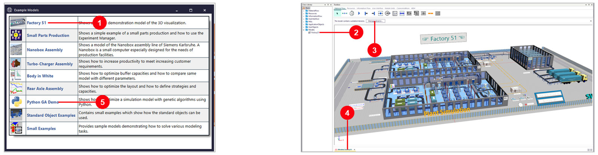
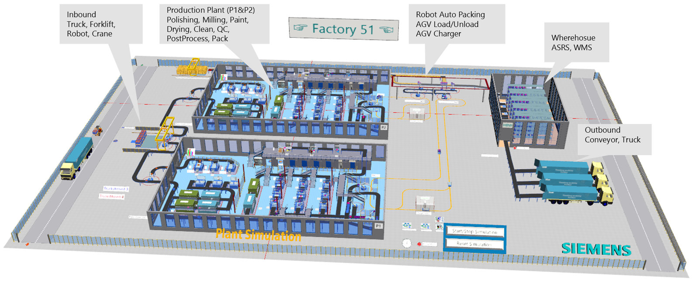
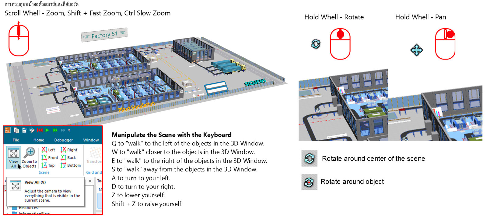
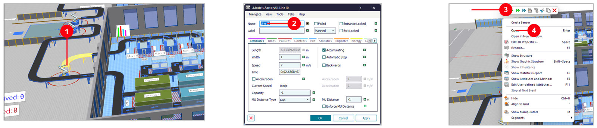
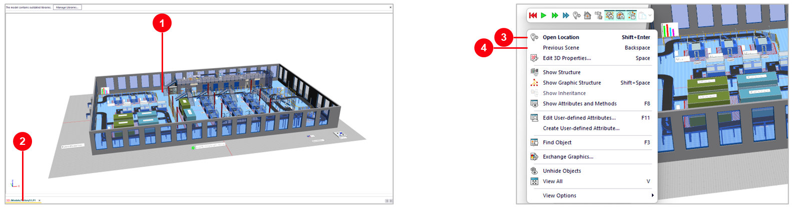
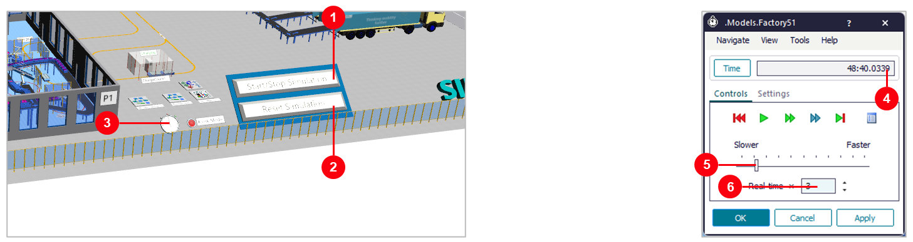
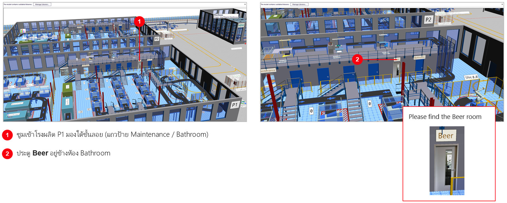

00A. โรงงานตัวอย่าง Factory 51
วัตถุประสงค์การเรียนรู้
- เข้าใจว่า Discrete Event Simulation (DES) คืออะไร และ Plant Simulation ใช้แก้ปัญหาแบบไหน
- เปิด Start Page และเปิดโมเดลตัวอย่าง Factory 51 ได้ด้วยตัวเอง
- หมุน ซูม เลื่อนมุมมอง 3D และโต้ตอบกับวัตถุด้วยคลิก / ดับเบิลคลิก / คลิกขวาได้
- เปิด Frame ด้านในแล้วกลับออกมา และสั่ง Start / Reset / ปรับความเร็วผ่าน EventController ได้
บทแรกของชุดสอนยังไม่ต้องสร้างอะไรเอง — เปิดโรงงานตัวอย่าง Factory 51 ที่ติดมากับโปรแกรม เพื่อฝึกใช้หน้าจอ ควบคุมมุมมอง 3D โต้ตอบกับวัตถุ และสั่งรันซิมูเลชัน ทั้งหมด 7 ขั้นตอน แล้วต่อด้วยโมเดลตัวอย่างตัวที่สองในบท 00B Small Parts Production
Plant Simulation คืออะไร
Plant Simulation จำลองระบบแบบ Discrete Event Simulation (DES) — คือการจำลอง "เหตุการณ์" ที่เกิดขึ้นเป็นจุดๆ ตามเวลา (เช่น ชิ้นงานมาถึง, เครื่องเริ่มทำงาน, เครื่องทำงานเสร็จ) แทนที่จะคำนวณทุกวินาทีต่อเนื่อง ทำให้จำลองกระบวนการผลิตหลายวัน/หลายเดือนได้ในเวลาไม่กี่วินาทีบนคอมพิวเตอร์

- 1ผังพื้นโรงงาน (เส้นสีเทาจางด้านหลัง) — แบบ Layout จริงที่ใช้เป็นพื้นหลังอ้างอิงตำแหน่งวาง Object
- 2กลุ่มเครื่องจักรสีเขียว-ฟ้า — แต่ละกลุ่มแทนสถานีเครื่องจักร/ประมวลผลในสายการผลิตจริง
- 3เส้นทางสีส้ม — เส้นทางลำเลียงชิ้นงานที่เชื่อมแต่ละสถานีเข้าด้วยกัน
- 4พาเลทสีเขียวด้านล่าง — จุดพักสินค้าสำเร็จรูปก่อนส่งออกจากไลน์
Simulation กับ Digital Twin
Simulation คือการสร้างแบบจำลองของระบบหรือกระบวนการในโลกจริงขึ้นมา เพื่อศึกษาพฤติกรรม ทดสอบสมมติฐาน หรือคาดการณ์ผลลัพธ์ภายใต้เงื่อนไขต่างๆ โดยไม่ต้องลงมือทำกับสถานการณ์จริง — เน้นทดสอบ "สิ่งที่อาจจะเกิดขึ้น" (What-if scenarios)
Digital Twin ต่อยอดอีกขั้น: เป็นแบบจำลองที่ เชื่อมโยงกับข้อมูลจริงอย่างต่อเนื่อง ทำให้ติดตามสิ่งที่เป็นอยู่แบบเรียลไทม์ (Real-time monitoring) และพยากรณ์เหตุการณ์ล่วงหน้า (Prediction) ได้ — โมเดลที่เริ่มสร้างในชุดสอนนี้คือจุดตั้งต้น พอต่อเข้ากับข้อมูลจริงจากหน้างานก็ต่อยอดเป็น Digital Twin ได้

- 1ลดต้นทุน — ทดสอบและแก้ปัญหาในโลกดิจิทัลก่อนลงทุนจริง
- 2ทำนายล่วงหน้า — รู้ว่าอะไรจะเสียก่อนที่มันจะเสียจริง
- 3ตัดสินใจได้ดีขึ้น — มีข้อมูลเรียลไทม์ประกอบการวิเคราะห์
- 4ออกแบบได้แม่นยำ — จำลองสถานการณ์ได้ไม่จำกัดจำนวนครั้ง

| โจทย์ | Plant Simulation ช่วยอะไร |
|---|---|
| ออกแบบสายการผลิตใหม่ | ทดสอบผัง Layout ก่อนลงทุนจริง ลดความเสี่ยงสร้างแล้วใช้ไม่ได้ |
| หาคอขวด (Bottleneck) | ดูว่าเครื่องไหนเป็นตัวถ่วง Throughput ของทั้งสาย |
| วางแผนกำลังการผลิต | ทดลองเพิ่ม/ลดจำนวนเครื่องจักรหรือคนงานแบบ what-if |
| บริหารสินค้าคงคลัง/โลจิสติกส์ | จำลองคลังสินค้า, AGV, ระบบขนส่งภายในโรงงาน |
ภาพรวม 7 ขั้นตอนของบทนี้
| ขั้น | หัวข้อ | ทำอะไร |
|---|---|---|
| 1 | เปิด Start Page | Window → Start Page |
| 2 | Example Models | เลือก Factory 51 |
| 3 | รู้จักโรงงาน | รับของ ผลิต คลัง ส่งของ |
| 4 | ควบคุมมุมมอง 3D | ซูม เลื่อน หมุน |
| 5 | คลิก / ดับเบิลคลิก / คลิกขวา | เลือกวัตถุ เปิดหน้าต่าง และ Quick tools |
| 6 | เปิด Frame ด้านใน | เข้า-ออก Frame P1 |
| 7 | EventController | Start / Reset / ความเร็ว |
Factory51.spp (อยู่ใน Examples\Demo ของโฟลเดอร์ติดตั้ง)
— ใช้ Student License ได้ โดยเปิดแบบ Viewer · ผลที่วัดได้ใน 2606: มีรถบรรทุกเข้ามา 5 คัน ภายในเวลาจำลอง 48:40 นาที
ขั้นที่ 1: เปิด Start Page

- 1เปิด Plant Simulation 2606 แล้วคลิกแท็บ
Window - 2คลิก
Start Page(ปกติจะขึ้นเองตอนเปิดโปรแกรม) - 3ในกลุ่ม
Getting StartedคลิกExample Models
ขั้นที่ 2: เปิดโมเดลตัวอย่าง Factory 51

- 1คลิก
Factory 51ในหน้าต่าง Example Models - 2โมเดลจะอยู่ใน Class Library →
Models → Factory51 - 3แถบ The model contains outdated libraries กด
Xปิดได้ บทนี้ไม่ต้องอัปเดต - 4โมเดลเปิดในหน้าต่าง 3D (แท็บล่างชื่อ
3D.Models.Factory51) - 52606 มีตัวอย่างเพิ่ม เช่น Python GA Demo และ Standard Object Examples
Yes เพื่อเปิดแบบ Viewer
(ดูและรันได้ แต่บันทึกการแก้ไขไม่ได้) และ License แบบนี้ควบคุมโมเดลจากภายนอกผ่าน COM ไม่ได้
(ขึ้น "Remote access is not allowed with this license")
ขั้นที่ 3: รู้จัก Factory 51 — ระบบทั้งโรงงานใน 3D


- 1Inbound — รถบรรทุก โฟล์คลิฟต์ หุ่นยนต์ เครน รับวัตถุดิบเข้าโรงงาน
- 2P1 / P2 — โรงผลิต 2 หลัง: ขัด (Polishing) กัด (Milling) พ่นสี อบ ล้าง QC แพ็ก
- 3AGV — ขนส่งด้วย AGV พร้อมจุดชาร์จ และ Robot Auto Packing
- 4คลัง HBW — คลังสินค้าอัตโนมัติ (ASRS, WMS)
- 5Outbound — สายพานและรถบรรทุกส่งของออก
ขั้นที่ 4: ควบคุมมุมมอง 3D ด้วยเมาส์
- 1หมุนล้อเมาส์ = ซูมเข้า-ออก (กด
Shiftค้าง = เร็ว ×10,Ctrlค้าง = ช้า ×0.1) - 2คลิกขวาค้างแล้วลาก = เลื่อนฉาก (Pan) — หรือกดล้อค้างแล้วลาก
- 3
Ctrl+ คลิกขวาค้างแล้วลาก = หมุนฉาก — หรือกดซ้าย+ขวาค้าง - 4กด
V= View All เห็นทั้งฉาก
V จะไม่คืนมุมกล้อง — ให้ใช้แท็บ View
(From Top / Front) หรือเปิดโมเดลใหม่
เดินในฉากด้วยคีย์บอร์ด

| ปุ่ม | ผลลัพธ์ |
|---|---|
W / S | เดินเข้าใกล้ / ถอยออกจากวัตถุในหน้าต่าง 3D |
Q / E | เดินไปทางซ้าย / ทางขวา |
A / D | หันซ้าย / หันขวา |
Z / Shift + Z | ลดระดับตัวเองลง / ยกตัวเองขึ้น |
ขั้นที่ 5: คลิก ดับเบิลคลิก และคลิกขวาที่วัตถุ

- 1คลิก = เลือกวัตถุ (ขึ้นสีเหลือง) — ในภาพคือสายพาน
Line10 - 2ดับเบิลคลิก = เปิดหน้าต่างของวัตถุ (ตั้งค่า เวลา การเสีย ฯลฯ)
- 3คลิกขวา = Quick tools: แถบปุ่ม Start / Stop / Reset ด้านบน
- 4เมนูลัด เช่น
Open(Enter),Show Statistics Report(F6),Show Attributes(F8)
ขั้นที่ 6: เปิด Frame ด้านใน และกลับออกมา

- 1ดับเบิลคลิก วัตถุในโรงผลิต (เช่นบูธขัดผิวใน P1) → เปิด Frame
P1แยกออกมา - 2แท็บล่างเปลี่ยนเป็น
3D.Models.Factory51.P1 - 3กลับ Frame หลัก:
Shift + Enterหรือคลิกขวาที่ว่าง →Open Location - 4
Backspace= Previous Scene (กลับมุมมองก่อนหน้า)
ขั้นที่ 7: EventController — เริ่ม หยุด รีเซ็ต และความเร็ว
Plant Simulation เป็นโปรแกรมจำลองแบบ discrete, event-controlled — โปรแกรมตรวจสอบเฉพาะ "จุดเวลาที่มีเหตุการณ์เกิดขึ้น" ในโมเดลเท่านั้น ไม่ได้คำนวณทุกช่วงเวลาต่อเนื่อง (Time-oriented) และควบคุมการรันทั้งหมดผ่านวัตถุ EventController ตัวเดียว


- 1คลิก
Start/Stop Simulation(ปุ่มในฉาก) เพื่อเริ่ม / หยุด - 2
Reset Simulation= เวลากลับไป 0 - 3ดับเบิลคลิกนาฬิกา EventController
- 4
Time= เวลาจำลองตอนนี้ (ในภาพคือ 48:40) - 5แถบ
Slower/Fasterปรับความเร็ว - 6
Real-time × 3= เร็วกว่าเวลาจริง 3 เท่า
แบบฝึก: หา Beer room ใน Factory 51
ฝึกซูม เลื่อน และหมุนมุมมองให้คล่อง — ในโรงงานมีห้องเล็กๆ ซ่อนอยู่ ลองหาเองก่อนแล้วค่อยดูเฉลย
ดูเฉลย

- 1ซูมเข้าโรงผลิต P1 มองใต้ชั้นลอย (แถวป้าย Maintenance / Bathroom)
- 2ประตู Beer อยู่ข้างห้อง Bathroom
ปัญหาที่พบบ่อย และสิ่งที่ต่างใน 2606
| อาการ / จุดที่ต่าง | วิธีแก้ / คำอธิบาย |
|---|---|
| Student License: เกิน 80 objects | กด Yes เพื่อเปิดแบบ Viewer (ดูและรันได้ แต่บันทึกการแก้ไขไม่ได้) |
| กดล้อค้างแล้วไม่หมุน | 2606: Ctrl + คลิกขวาค้างลาก = หมุน, กดล้อค้าง = เลื่อน |
| หมุนจนมุมกล้องเพี้ยน | กด V ไม่คืนมุม → แท็บ View: From Top / Front หรือเปิดโมเดลใหม่ |
| ป้ายชื่อวัตถุค้างบนจอ | เลื่อนเมาส์ไปพื้นที่ว่างในฉาก ป้ายจะหายไป |
| แถบ outdated libraries | กด X ปิดได้ บทนี้ไม่ต้อง Manage Libraries |
| Example Models / Start Page | 2606 เพิ่ม Python GA Demo, Standard Object Examples, QuickStart, New Features และ Copilot |
ภาพรวมชุดสอน 8 บท
บท 02–07 ใช้ไลน์ผลิต 5 สถานี (Source → Station1…5 → Drain, 0:10 นาทีต่อชิ้น) ไลน์เดียวต่อเนื่อง
แต่ละบทเพิ่มปัญหาจริงทีละเรื่อง จนถึงการตัดสินใจลงทุน — 1 บท = 1 ไฟล์ .spp ที่มีหลาย Frame
(Model ก่อนแก้ → Model2 แก้ 1 จุด → Model3 …)
| บท | หัวข้อ | หลังจบบททำได้ | เขียนโค้ด |
|---|---|---|---|
| 00A | โรงงานตัวอย่าง Factory 51 | เปิด Start Page เปิดตัวอย่าง หมุน/ซูม 3D เปิด Frame ด้านใน สั่ง Run / Reset | ไม่ |
| 00B | โมเดลตัวอย่าง Small Parts | รันเทียบไลน์ ใช้ Bottleneck Analyzer, Experiment Manager และ Energy Analyzer บนโมเดลที่มีอยู่แล้ว | ไม่ |
| 01 | โมเดลแรก | Source → Station → Drain, ตั้งเวลา, EventController, Display | ไม่ |
| 02 | คอขวด + ParallelStation | ไลน์ 5 สถานี, Display / Chart, แก้คอขวดด้วยเครื่องขนาน หรือ ParallelStation, กับดัก When Full | ไม่ |
| 03 | เวลาสุ่ม + Buffer + เครื่องเสีย + OEE | Uniform, Buffer, Failure (Availability, MTTR), แท็บ Statistics, คำนวณ OEE, รันสั้น vs ยาว | ไม่ |
| 04 | คน + กะทำงาน | Workplace, WorkerPool, Broker, คนคุมเครื่อง, ShiftCalendar, Worker chart | ไม่ |
| 05 | หลายรุ่น + งานเสีย + Method แรก | Source ตามตาราง, เวลาต่างกันตามรุ่น, FG/NG, Variable, Method สั้น, Sankey | ใช่ (5–10 บรรทัด) |
| 06 | ผัง 3D + ขนส่งด้วย AGV | วางไลน์บนผังโรงงาน, 3D view, AGV ขนจากคลังเข้าไลน์, Conveyor | อาจมี |
| 07 | วิเคราะห์ + หาค่าที่ดีที่สุด | Bottleneck Analyzer, ExperimentManager, อ่านผล, สรุปเพื่อตัดสินใจ | ไม่ |
Show Statistics Report
หรือกด F6 เพื่อดูสถิติ